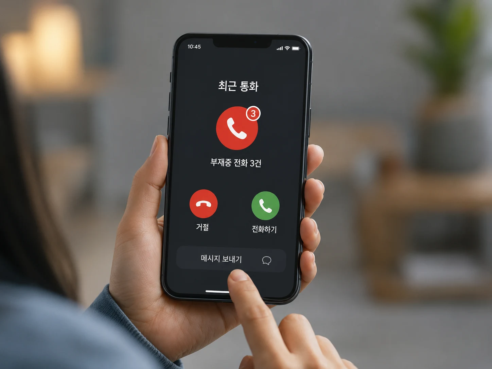
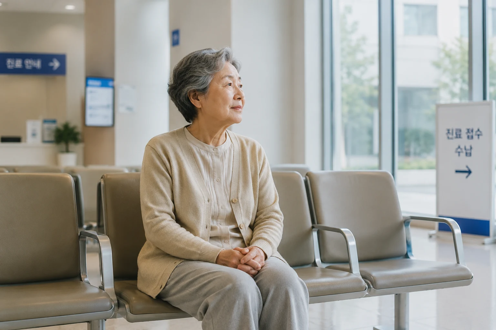
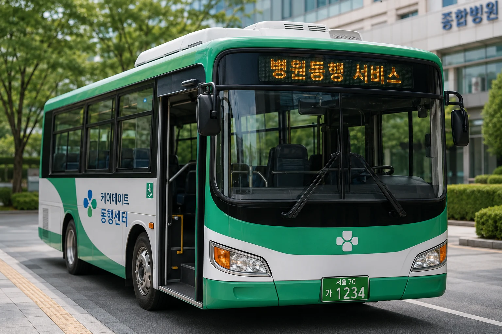
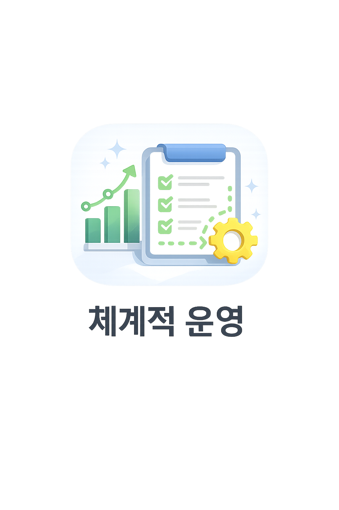
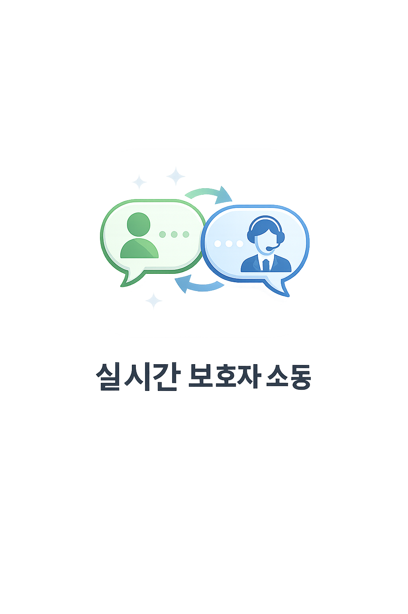
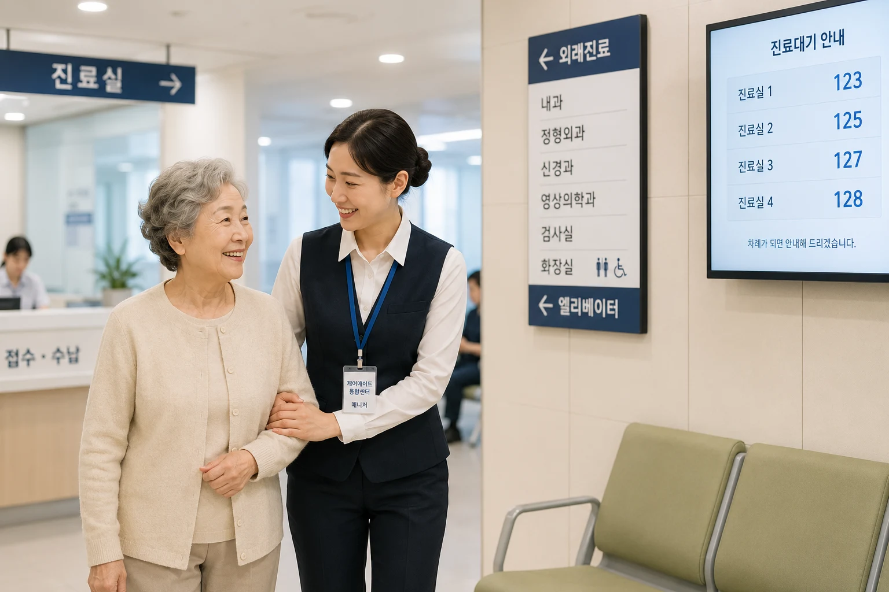
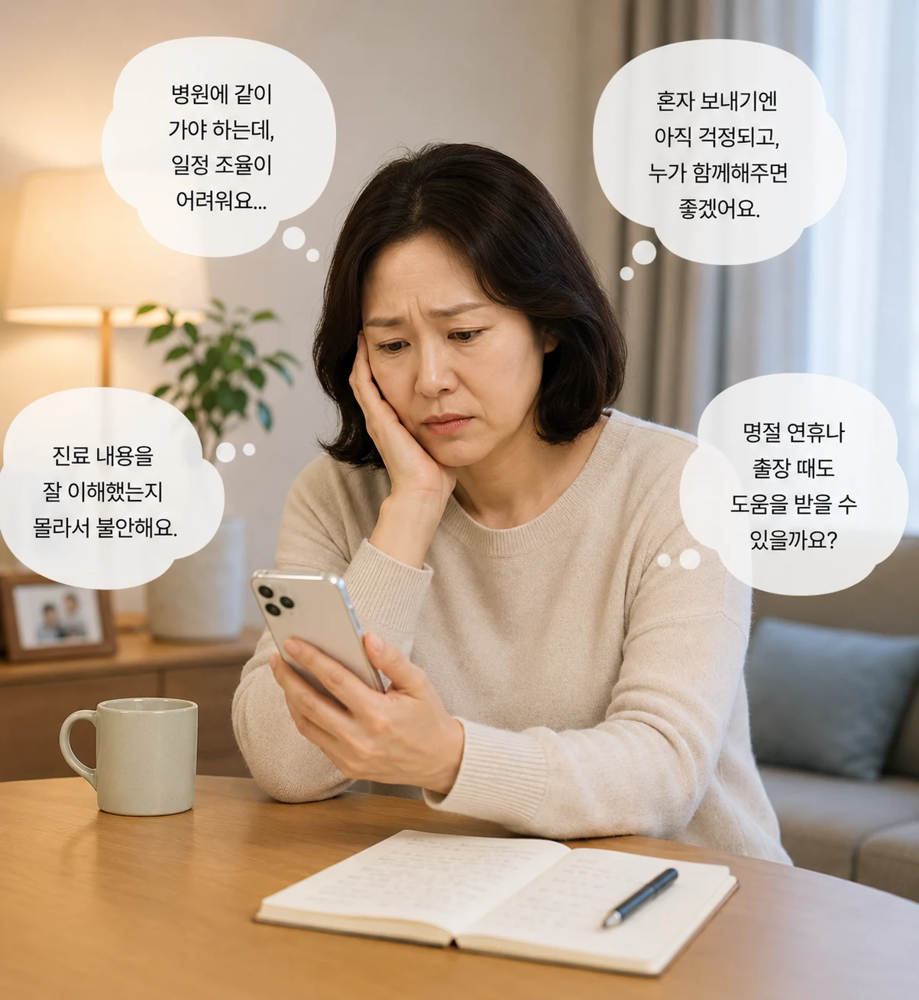
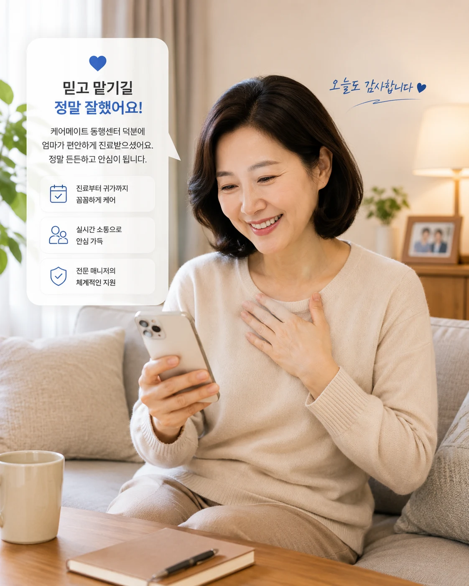
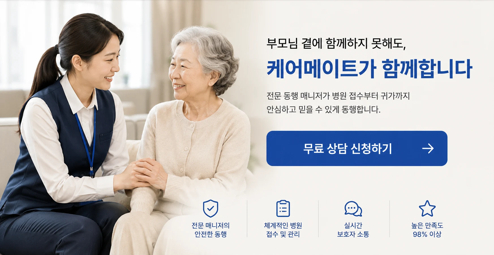

전문 병원동행 매니저 서비스
부모님 병원 방문,
이제 혼자 보내지 마세요
예약 확인부터 이동, 접수, 진료 동행, 수납, 약국, 귀가와 결과 보고까지 보호자 대신 꼼꼼히 함께합니다.
1:1 동행전담 매니저 배정
실시간 공유보호자 안심 보고
귀가 지원이동부터 복약까지
서비스 신뢰 지표
Guardian Pain Points
많은 보호자분들이 이런 걱정을 하세요
혼자 병원을 다녀오시는 부모님, 보호자가 곁에 없을 때 생기는 작은 공백까지 챙깁니다.
진료 내용을 정확히 듣고 오셨을까?
검사 결과, 다음 예약, 복약 안내처럼 중요한 내용을 보호자가 놓치지 않도록 정리합니다.
병원 안에서 오래 기다리진 않으실까?
접수, 대기, 이동 동선을 매니저가 곁에서 확인하고 필요한 도움을 제공합니다.
일정 때문에 매번 동행하기 어렵다면?
업무와 돌봄 사이에서 지친 보호자를 위해 필요한 날만 전문 동행을 연결합니다.
Real Situations
고민이 커지는 순간을 대신 챙깁니다

병원에서 온 부재중 전화
확인하지 못한 연락도 동행 리포트로 빠르게 공유합니다.
업무 중 계속되는 걱정
보호자가 일상에 집중할 수 있도록 진행 상황을 전합니다.

긴 대기와 복잡한 동선
접수부터 검사실 이동까지 옆에서 차분히 안내합니다.

이동수단의 부담
출발, 병원 이동, 귀가까지 필요한 이동 과정을 지원합니다.
Service Strength
전문성과 보고 체계로 안심을 만듭니다
전문 매니저 시스템
병원 이용 흐름을 이해한 매니저가 어르신의 상태와 일정에 맞춰 동행합니다.

체계적인 운영 프로세스
상담, 일정 확인, 매니저 배정, 동행, 결과 보고까지 표준 절차로 관리합니다.

실시간 보호자 소통
진행 상황과 진료 후 안내 사항을 보호자에게 명확하고 빠르게 전달합니다.
Process
상담부터 결과 보고까지 한 흐름으로 진행됩니다
- 01상담 신청
필요한 병원 일정과 동행 범위를 확인합니다.
- 02일정 확인
진료 시간, 이동 방법, 준비물을 점검합니다.
- 03매니저 배정
지역과 일정에 맞는 전문 매니저를 연결합니다.
- 04병원 동행
출발부터 접수, 검사, 진료까지 함께합니다.
- 05진료 지원
의료진 안내 사항과 다음 일정을 기록합니다.
- 06귀가 지원
약국 이용과 안전한 귀가를 돕습니다.
- 07결과 보고
보호자에게 동행 결과와 체크포인트를 전달합니다.
Support Scope
병원 방문에 필요한 일을 세심하게 지원합니다
12번 운영 프로세스 이미지는 미포함 상태이므로, 실제 서비스 범위를 한눈에 확인할 수 있는 텍스트 카드로 대체했습니다.
병원 예약 확인
출발 및 이동 지원
접수·대기 안내
검사실 동선 동행
진료실 동행
수납 지원
약국 이용 지원
실시간 진행 공유
결과 리포트 전달
Trust System
믿고 맡길 수 있는 운영 환경
협업 회의
동행 품질과 보호자 피드백을 팀 단위로 점검합니다.
전문 교육 수료
현장 대응과 커뮤니케이션 교육을 기반으로 배정합니다.
관리 체계
동행 일정과 결과를 운영자가 함께 확인합니다.

실제 병원 동행
복잡한 병원 환경에서도 차분하게 안내합니다.
공공기관 협업
지역 돌봄 네트워크와 함께 신뢰 기반을 넓힙니다.
Reviews
보호자들이 전한 안심의 경험
“진료 결과와 다음 예약까지 정리해서 보내주셔서 회사에서도 마음이 놓였습니다.”
직장인 보호자 김OO님“혼자 병원 가시면 늘 걱정이었는데, 매니저님이 접수와 약국까지 챙겨주셨어요.”
부모님 동행 이용자 박OO님“상담 때부터 필요한 준비물을 알려주셔서 처음 이용하는데도 어렵지 않았습니다.”
정기 진료 동행 이용자 이OO님Before & After
이용 전의 불안이 이용 후 안심으로 바뀝니다

Before
계속 신경 쓰이는 병원 일정
업무 중에도 연락을 놓칠까 걱정하고, 진료 내용을 정확히 알기 어렵습니다.

After
보고를 받고 안심하는 보호자
동행 과정과 결과가 정리되어 부모님의 병원 방문을 더 편안하게 관리합니다.
FAQ
자주 묻는 질문
상담 시 지역, 병원, 진료 일정에 맞춰 세부 이용 가능 여부를 확인합니다.
외래 진료, 검사, 정기 통원, 수납과 약국 이용 등 보호자 동행이 필요한 병원 방문에 이용할 수 있습니다.
네. 진료 후 안내 사항, 다음 예약, 복약 관련 체크포인트를 정리해 보호자에게 전달합니다.
상담 시 출발지와 병원 위치를 확인한 뒤 가능한 이동 방식과 지원 범위를 안내합니다.
매니저 배정 상황에 따라 가능 여부가 달라질 수 있습니다. 빠른 확인을 위해 상담 신청을 남겨주세요.
